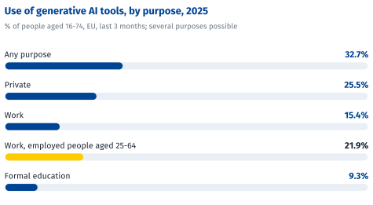
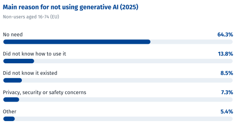

- Who
- Eurostat
- When
- 2025
- Where
- EU-27
- Sample
- IndividualsPeople aged 16 to 74
- AI use
- At workPrivate life
- Question
- “Have you used any generative AI tools (e.g. ChatGPT, Copilot, Gemini, LLaMA, Midjourney, DALL-E) to create content like text, images, programming code, or videos in the last 3 months?” Then: “What was the purpose of using generative AI tools in the last 3 months?” For private purposes / For professional (work) purposes / For formal education (several answers possible)
- Demographics
Individuals
age, sex, education, employment status, occupation, degree of urbanisation, country of birth and citizenship, country- Adoption
- Individuals: 32.7%
About the survey
Main aim. To produce official, comparable statistics on how people use the internet and digital technologies. Questions on generative AI were asked for the first time in 2025.
Also covers. Digital skills, online learning, online job search, privacy and data protection, misinformation, e-government and e-commerce.
Results

